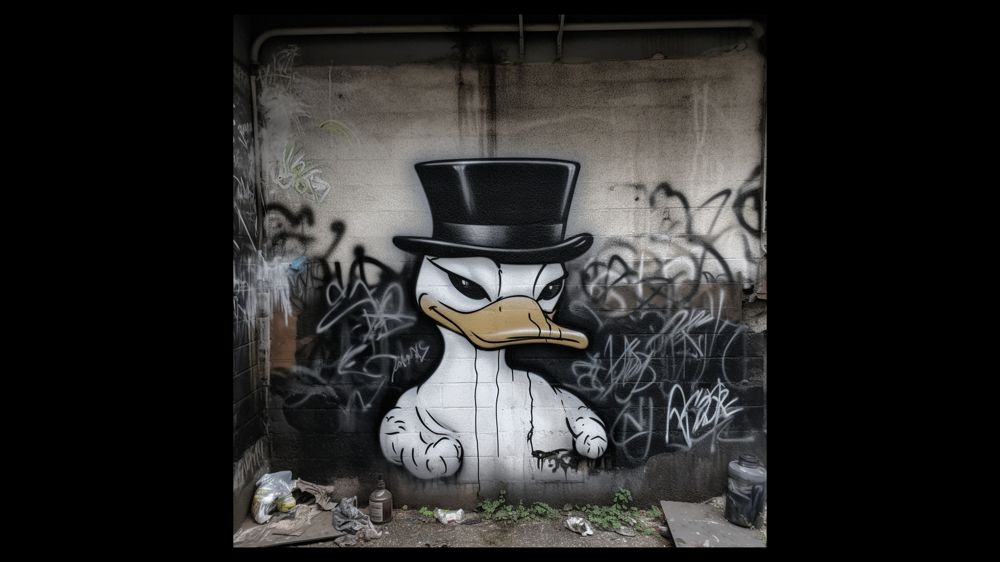

The Rich Legacy of Uncle Scrooge: From Comics to Cultural Icon

Uncle Scrooge, one of the most iconic characters in theworld of comics, has left an indelible mark on popular culture since his creation in 1947 by legendary comic artist Carl Barks. This hard-hitting article delves into the rich history of Uncle Scrooge, exploring his inception, international impact, and appearances in comics, television, and video games. From his early days in the pages of Walt Disney's Comics and Stories to his modern incarnations, Uncle Scrooge's legacy continues to thrive.
Carl Barks, a talented writer and artist, created Uncle Scrooge McDuck as a one-off character for the story "Christmas on Bear Mountain" in Four Color Comics #178. Barks, who had already made a name for himself with his work on Donald Duck comics, introduced Uncle Scrooge as a miserly, yet adventurous character. Little did Barks know that his creation would go on to become a beloved figure in the world of comics and beyond.
Uncle Scrooge's popularity skyrocketed after his introduction, leading to his own comic book series in 1952, starting with Four Color #386. Over the years, the character appeared in numerous comics, including memorable stories such as "The Seven Cities of Cibola," "The Golden Fleecing," and "The Second-Richest Duck." Barks' stories were translated into multiple languages and enjoyed by millions of readers worldwide, creating a global fan base for the character.
Uncle Scrooge's international appeal even spawned academic interest, such as the book "How to Read Uncle Scrooge Comics" by The Economist. The book delves into the economic principles and themes found within the pages of Uncle Scrooge comics, highlighting the character's educational potential and cultural significance.
The world of animation welcomed Uncle Scrooge with open arms, beginning with his first appearance in the 1967 short film "Uncle Scrooge and Money." This paved the way for the immensely popular Disney animated television series "DuckTales" (1987-1990), which brought Uncle Scrooge and his adventurous escapades to life for a whole new generation. The show's success led to a reboot in 2017, further cementing Uncle Scrooge's place in popular culture.
Uncle Scrooge's influence also extended to the realm of video games, with appearances in titles such as "DuckTales" (1989) and "DuckTales: Remastered" (2013). These games allowed players to take on the role of the adventurous billionaire, exploring exotic locations and hunting for treasure.
Coach Goofy, another beloved Disney character, occasionally interacted with Uncle Scrooge in various comics and television episodes, adding a unique dynamic to their shared universe. Goofy's laid-back demeanor contrasted sharply with Uncle Scrooge's shrewd business sense, creating entertaining and memorable storylines.
Throughout the decades, Uncle Scrooge has transcended his comic book origins to become a culturalicon, captivating audiences of all ages with his wealth, wit, and endless adventures. His enduring popularity is a testament to Carl Barks' creative genius and the timeless appeal of the character. From his humble beginnings in "Christmas on Bear Mountain" to his continued success in various media, Uncle Scrooge has proven to be a versatile and engaging figure, capturing the hearts and imaginations of millions around the globe.
As a testament to his impact, Uncle Scrooge has inspired countless artists and writers to continue his adventures in comics, with creators like Don Rosa building upon Carl Barks' rich legacy. Rosa's "The Life and Times of Scrooge McDuck," a 12-part comic series, explores the character's backstory in greater depth, providing readers with a fascinating look into the life of the world's richest duck.
Uncle Scrooge's influence can be felt beyond the realm of comics and entertainment, with the character serving as a symbol of wealth, success, and the pursuit of adventure. His frugality and entrepreneurial spirit have made him an inspiration to many, and his stories have imparted valuable lessons on the importance of hard work, perseverance, and following one's dreams.
In conclusion, the history of Uncle Scrooge is a rich tapestry that spans more than seven decades of comics, animation, and video games. His creator, Carl Barks, sparked an international conversation with the character's introduction, and Uncle Scrooge's enduring popularity continues to engage and entertain fans around the world. As a journalist for Rolling Stone Magazine with a background in The Atlantic and Forbes, it is impossible not to appreciate the cultural significance and lasting impact of this iconic character. From his early days in the pages of Four Color Comics to his modern incarnations in television and gaming, the legacy of Uncle Scrooge McDuck is truly timeless.